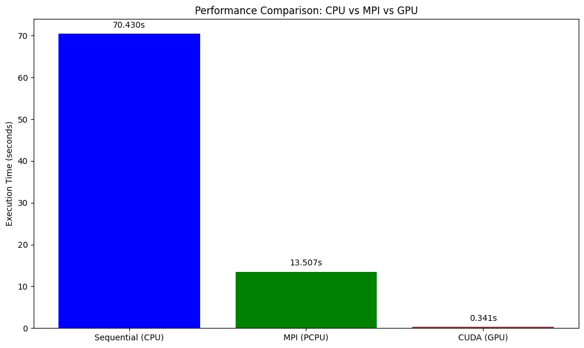

Performance analysis tools
Overview
Teaching: 30 min
Exercises: 10 minQuestions
Resource Monitoring and Performance Analysis
Monitoring Job Performance
#!/bin/bash
#SBATCH --partition=gpu
#SBATCH --gpus=1
#SBATCH --job-name=ResourceMonitor
#SBATCH --output=ResourceMonitor_%j.out
#SBATCH --time=00:10:00 # 10 minutes max (5 for monitoring + buffer)
# --------- Configuration ---------
LOG_FILE="resource_monitor.log"
INTERVAL=30 # Interval between logs in seconds
DURATION=60 # Total duration in seconds (5 minutes)
ITERATIONS=$((DURATION / INTERVAL))
# --------- Start Monitoring ---------
echo "Starting Resource Monitoring for $DURATION seconds (~$((DURATION/60)) minutes)..."
echo "Logging to: $LOG_FILE"
echo "------ Monitoring Started at $(date) ------" >> "$LOG_FILE"
# --------- System Info Check ---------
echo "==== System Info Check ====" | tee -a "$LOG_FILE"
echo "Hostname: $(hostname)" | tee -a "$LOG_FILE"
# Check NVIDIA driver and GPU presence
if command -v nvidia-smi &> /dev/null; then
echo "✅ nvidia-smi is available." | tee -a "$LOG_FILE"
if nvidia-smi &>> "$LOG_FILE"; then
echo "✅ GPU detected and driver is working." | tee -a "$LOG_FILE"
else
echo "⚠️ NVIDIA-SMI failed. Check GPU node or driver issues." | tee -a "$LOG_FILE"
fi
else
echo "❌ nvidia-smi is not installed." | tee -a "$LOG_FILE"
fi
echo "Checking for NVIDIA GPU presence on PCI bus..." | tee -a "$LOG_FILE"
if lspci | grep -i nvidia &>> "$LOG_FILE"; then
echo "✅ NVIDIA GPU found on PCI bus." | tee -a "$LOG_FILE"
else
echo "❌ No NVIDIA GPU detected on this node." | tee -a "$LOG_FILE"
fi
echo "" | tee -a "$LOG_FILE"
# --------- Trap CTRL+C for Clean Exit ---------
trap "echo 'Stopping monitoring...'; echo '------ Monitoring Ended at $(date) ------' >> \"$LOG_FILE\"; exit" SIGINT SIGTERM
# --------- Monitoring Loop ---------
for ((i=1; i<=ITERATIONS; i++)); do
echo "========================== $(date) ==========================" >> "$LOG_FILE"
# GPU usage monitoring
echo "--- GPU Usage (nvidia-smi) ---" >> "$LOG_FILE"
nvidia-smi 2>&1 | grep -v "libnvidia-ml.so" >> "$LOG_FILE"
echo "" >> "$LOG_FILE"
# CPU and Memory monitoring
echo "--- CPU and Memory Usage (top) ---" >> "$LOG_FILE"
top -b -n 1 | head -20 >> "$LOG_FILE"
echo "" >> "$LOG_FILE"
sleep $INTERVAL
done
echo "------ Monitoring Ended at $(date) ------" >> "$LOG_FILE"
echo "✅ Resource monitoring completed."
Understanding Outputs - top - CPU and Memory Monitoring
Example Output:
--- CPU and Memory Usage (top) ---
top - 17:53:49 up 175 days, 9:41, 0 users, load average: 1.01, 1.06, 1.08
Tasks: 765 total, 1 running, 764 sleeping, 0 stopped, 0 zombie
%Cpu(s): 2.2 us, 0.1 sy, 0.0 ni, 97.7 id, 0.0 wa, 0.0 hi, 0.0 si, 0.0 st
MiB Mem : 515188.2 total, 482815.2 free, 17501.5 used, 14871.5 buff/cache
MiB Swap: 4096.0 total, 4072.2 free, 23.8 used. 493261.3 avail Mem
Explanation:
Header Line - System Uptime and Load Average
top - 17:53:49 up 175 days, 9:41, 0 users, load average: 1.01, 1.06, 1.08
- 17:53:49 - Current time.
- up 175 days, 9:41 - How long the system has been running.
- 0 users - Number of users logged in.
-
load average - System load over 1, 5, and 15 minutes.
- A load of 1.00 means one CPU core is fully utilized.
Task Summary
Tasks: 765 total, 1 running, 764 sleeping, 0 stopped, 0 zombie
- 765 total - Total processes.
- 1 running - Actively running.
- 764 sleeping - Waiting for input or tasks.
- 0 stopped - Stopped processes.
- 0 zombie - Zombie processes (defunct).
CPU Usage
%Cpu(s): 2.2 us, 0.1 sy, 0.0 ni, 97.7 id, 0.0 wa, 0.0 hi, 0.0 si, 0.0 st
| Field | Meaning |
|---|---|
| us | User CPU time - 2.2% |
| sy | System (kernel) time - 0.1% |
| ni | Nice (priority) - 0.0% |
| id | Idle - 97.7% |
| wa | Waiting for I/O - 0.0% |
| hi | Hardware interrupts - 0.0% |
| si | Software interrupts - 0.0% |
| st | Steal time (virtualization) - 0.0% |
Memory Usage
MiB Mem : 515188.2 total, 482815.2 free, 17501.5 used, 14871.5 buff/cache
| Field | Meaning |
|---|---|
| total | Total RAM (515188.2 MiB) |
| free | Free RAM (482815.2 MiB) |
| used | Used by programs (17501.5 MiB) |
| buff/cache | Disk cache and buffers (14871.5 MiB) |
Swap Usage
MiB Swap: 4096.0 total, 4072.2 free, 23.8 used. 493261.3 avail Mem
| Field | Meaning |
|---|---|
| total | Swap space available (4096 MiB) |
| free | Free swap (4072.2 MiB) |
| used | Swap used (23.8 MiB) |
| avail Mem | Available memory for new tasks (493261.3 MiB) |
- These explanations cover the descriptions of each of the different parameters given by the
topoutput.
Performance Comparison Script
import matplotlib.pyplot as plt
# Extracted timings from the printed output
methods = ['Sequential (CPU)', 'MPI (PCPU)', 'CUDA (GPU)']
times = [70.430, 13.507, 0.341] # Replace the times with the times printed by running the above scripts
plt.figure(figsize=(10, 6))
bars = plt.bar(methods, times, color=['blue', 'green', 'red'])
plt.ylabel('Execution Time (seconds)')
plt.title('Performance Comparison: CPU vs MPI vs GPU')
# Add labels above bars
for bar, time in zip(bars, times):
plt.text(bar.get_x() + bar.get_width() / 2, bar.get_height() + 1,
f'{time:.3f}s', ha='center', va='bottom')
plt.tight_layout()
plt.savefig('performance_comparison.png', dpi=300, bbox_inches='tight')
plt.show()
Exercise: Resource Efficiency Analysis
Run the above python script to create a comparitive analysis between the different methods you used in this tutorial to understand the efficiency of different resources
Example Solution

This plot shows the execution time comparison between CPU, MPI, and GPU implementations.
Best Practices and Common Pitfalls
Resource Allocation Best Practices
- Match resources to workload requirements
- Don’t request more resources than you can use
- Consider memory requirements carefully
- Use appropriate partitions/queues
- Test with small jobs first
- Validate your scripts with shorter runs
- Check resource utilization before scaling up
- Monitor and optimize
- Use profiling tools to identify bottlenecks
- Adjust resource requests based on actual usage
Common Mistakes to Avoid
- Over-requesting resources
# Bad: Requesting 32 cores for sequential code #SBATCH --cpus-per-task=32 ./sequential_program # Good: Match core count to parallelization #SBATCH --cpus-per-task=1 ./sequential_program - Memory allocation errors
# Bad: Not specifying memory for memory-intensive jobs #SBATCH --partition=defaultq # Good: Specify adequate memory #SBATCH --partition=defaultq #SBATCH --mem=16G - GPU job inefficiencies
# Bad: Too many CPU cores for GPU job #SBATCH --cpus-per-task=32 #SBATCH --gpus-per-node=1 # Good: Balanced CPU-GPU ratio #SBATCH --cpus-per-task=4 #SBATCH --gpus-per-node=1
Summary
Resource optimization in HPC involves understanding your workload characteristics and matching them with appropriate resource allocations. Key takeaways:
- Profile your code to understand resource requirements
- Use sequential jobs for single-threaded applications
- Leverage parallel computing for scalable workloads
- Utilize GPUs for massively parallel computations
- Monitor performance and adjust allocations accordingly
- Avoid common pitfalls like over-requesting resources
Efficient resource utilization not only improves your job performance but also ensures fair access to shared HPC resources for all users.
Revisit Earlier Exercises
Now that you’ve learned how to submit jobs using Slurm and request computational resources effectively, revisit the following exercises from the earlier lesson:
Try running them now on your cluster using the appropriate Slurm script and resource flags.
Solution 1: Slurm Submission Script for Exercise MPI with
mpi4pyThe following script can be used to submit your MPI-based Python program (
mpi_hpc_ws.py) on an HPC cluster using Slurm:#!/bin/bash #SBATCH --job-name=mpi_hpc_ws #SBATCH --output=mpi_%j.out #SBATCH --error=mpi_%j.err #SBATCH --partition=defaultq #SBATCH --nodes=2 #SBATCH --ntasks=4 #SBATCH --time=00:10:00 #SBATCH --mem=16G # Load required modules module purge module load Python/3.9.1 module list Create a python virtual environment python3 -m venv name_of_your_venv Activate your Python environment source name_of_your_venv/bin/activate # Run the MPI job mpirun -np 4 python mpi_hpc_ws.pyMake sure your virtual environment has
mpi4pyinstalled and that your system has access to the OpenMPI runtime viampirun. Adjust the number of nodes and tasks depending on the cluster policies.
Solution 2: Slurm Submission Script for Exercise GPU with
numba-cudaThe following script can be used to submit a GPU-accelerated Python job (
numba_cuda_test.py) using Slurm:#!/bin/bash #SBATCH --job-name=Numba_Cuda #SBATCH --output=Numba_Cuda_%j.out #SBATCH --error=Numba_Cuda_%j.err #SBATCH --partition=gpu #SBATCH --nodes=1 #SBATCH --ntasks-per-node=1 #SBATCH --cpus-per-task=4 #SBATCH --mem=16G #SBATCH --gpus-per-node=1 #SBATCH --time=00:10:00 # --------- Load Environment --------- module load Python/3.9.1 module load cuda/11.2 module list # --------- Check whether the GPU is available --------- from numba import cuda print("CUDA Available:", cuda.is_available()) # Activate virtual environment source 'name_of_venv'/bin/activate # Here name_of_venv refers to the name of your virtual environment without the quotes # --------- Run the Python Script --------- python numba_cuda_test.pyMake sure your virtual environment includes the
numba-cudapython library to access the GPU.
Key Points